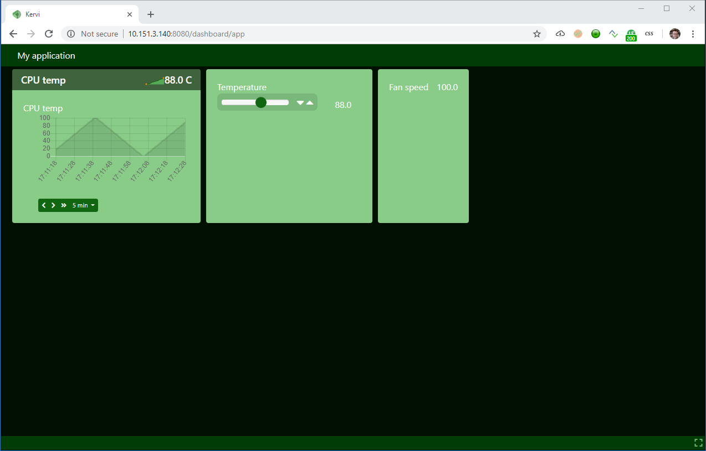

Controllers¶
Kervi controllers reacts to one or more inputs and computes the value of one or more outputs. The input could come from the user via the web based UI, sensors or other application logic.
Below is a fan controller that takes an temperature input and calculates the speed of the fan (in percent). The controller starts the fan when the input temperature is over 20 degrees and dynamically increases the speed and reach max speed when the temperature is 80 degrees.
1 2 3 4 5 6 7 8 9 10 11 12 13 14 15 16 17 18 19 20 21 22 23 24 25 26 27 28 29 30 31 32 33 34 35 36 37 38 39 40 41 42 43 44 45 46 47 48 49 50 51 52 53 54 55 56 57 58 59 60 | if __name__ == '__main__':
from kervi.application import Application
app = Application()
#create sensors
from kervi.sensors import Sensor
from kervi.devices.sensors.system import CPUTempSensorDeviceDriver
#create a senors that uses CPU temp device driver
cpu_temp_sensor = Sensor("CPUTempSensor","CPU temp", CPUTempSensorDeviceDriver())
#link to dashboard
cpu_temp_sensor.link_to_dashboard(type = "value", show_sparkline=True, link_to_header=True)
cpu_temp_sensor.link_to_dashboard(type="chart")
#define a controller
from kervi.controllers import Controller
from kervi.values import NumberValue
class FanController(Controller):
def __init__(self):
Controller.__init__(self, "fan_controller", "Fan")
#define an input that is a number
self.temp = self.inputs.add("temp", "Temperature", NumberValue)
self.temp.min = 0
self.temp.max = 150
#define an output that is a number
self.fan_speed = self.outputs.add("fan_speed", "Fan speed", NumberValue)
#input_changed is called by the framework when any of the controller inputs changes its value.
def input_changed(self, changed_input):
temp = self.temp.value
if temp <= 20:
self.fan_speed.value = 0
else:
speed = (temp / 80) * 100
if speed > 100:
speed = 100
self.fan_speed.value = speed
#Instantiate the controller
fan_controller = FanController()
#show the controller input and output in the ui.
fan_controller.temp.link_to_dashboard()
fan_controller.fan_speed.link_to_dashboard()
#link the fan controllers temp input to cpu temperature sensor
fan_controller.temp.link_to(cpu_temp_sensor)
#link to the motor controller device
from kervi.devices.motors.adafruit_i2c_motor_hat import AdafruitMotorHAT
motor_driver = AdafruitMotorHAT()
motor_driver.dc_motors[0].speed.link_to(fan_controller.speed)
app.run()
|
Run the script and you should see something like this.
Read more about all the possibilities with controllers here.